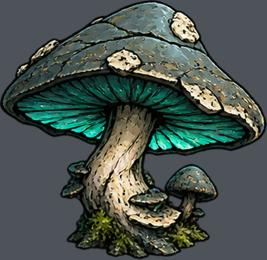
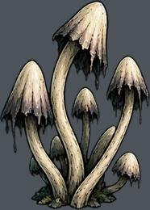
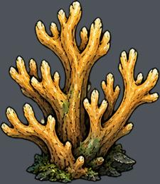
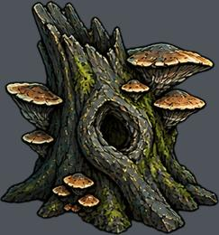
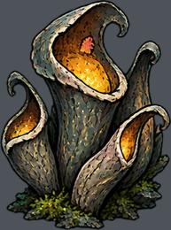
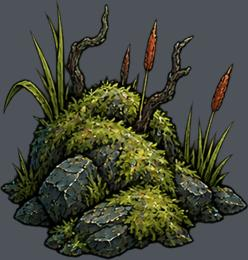
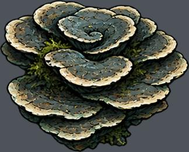
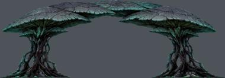

res://assets/biomes/swamp/prop-0.png
实例 157；运行画布高度 0.31–8.24 m
尺寸 [382, 372]；透明轮廓 (0, 0, 381, 371)
语义支点、占地、挂点尚需逐图标注下列高度是画布高度，不是实体净高。透明包围盒不等于脚点或占地。

实例 157；运行画布高度 0.31–8.24 m
尺寸 [382, 372]；透明轮廓 (0, 0, 381, 371)
语义支点、占地、挂点尚需逐图标注
实例 201；运行画布高度 0.33–2.42 m
尺寸 [283, 396]；透明轮廓 (1, 1, 282, 395)
语义支点、占地、挂点尚需逐图标注
实例 133；运行画布高度 0.28–2.88 m
尺寸 [333, 384]；透明轮廓 (1, 0, 332, 383)
语义支点、占地、挂点尚需逐图标注
实例 203；运行画布高度 0.31–2.93 m
尺寸 [359, 384]；透明轮廓 (1, 1, 358, 383)
语义支点、占地、挂点尚需逐图标注实例 54；运行画布高度 0.45–2.18 m
尺寸 [290, 362]；透明轮廓 (1, 1, 289, 361)
语义支点、占地、挂点尚需逐图标注
实例 46；运行画布高度 0.55–2.45 m
尺寸 [287, 387]；透明轮廓 (1, 0, 287, 386)
语义支点、占地、挂点尚需逐图标注
实例 159；运行画布高度 0.37–2.69 m
尺寸 [357, 374]；透明轮廓 (1, 5, 357, 373)
语义支点、占地、挂点尚需逐图标注实例 691；运行画布高度 0.10–2.91 m
尺寸 [329, 345]；透明轮廓 (1, 1, 328, 345)
语义支点、占地、挂点尚需逐图标注
实例 206；运行画布高度 0.32–2.75 m
尺寸 [376, 302]；透明轮廓 (1, 0, 376, 302)
语义支点、占地、挂点尚需逐图标注
实例 22；运行画布高度 11.80–19.24 m
尺寸 [935, 324]；透明轮廓 (1, 1, 935, 324)
语义支点、占地、挂点尚需逐图标注